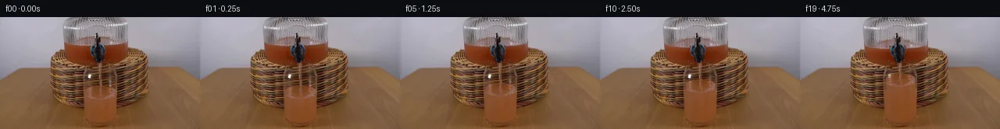

![首帧]()

Round 00
2026-11-05T02:43:07.974692+00:00像素候选变化代码 +190/−0inspection 更新
pixels 922d268cbf01235d · code 5aa3afc9d2a44c0d
查看本轮 generate.py 真实 diff
--- previous/generate.py
+++ current/generate.py
@@ -0,0 +1,190 @@
+"""Local photograph continuation; no learned models or external renderer."""
+from pathlib import Path
+import json
+import math
+import cv2
+import numpy as np
+from PIL import Image, ImageDraw
+from artifact_io import save
+
+ROOT = Path(__file__).resolve().parent
+SCALE = 4
+H, W = 144, 256
+source = np.asarray(Image.open(ROOT / 'first_frame.png').convert('RGB'))
+base = cv2.resize(source.astype(np.float32), (W*SCALE, H*SCALE), interpolation=cv2.INTER_CUBIC)
+Y, X = np.mgrid[:H*SCALE, :W*SCALE].astype(np.float32)
+X = (X + .5) / SCALE - .5
+Y = (Y + .5) / SCALE - .5
+
+
+def smooth(a, b, x):
+ z = np.clip((x-a)/(b-a), 0, 1)
+ return z*z*(3-2*z)
+
+
+def sample(x, y):
+ return cv2.remap(base, ((x+.5)*SCALE-.5).astype(np.float32),
+ ((y+.5)*SCALE-.5).astype(np.float32), cv2.INTER_CUBIC,
+ borderMode=cv2.BORDER_REPLICATE)
+
+
+def blend(canvas, color, mask):
+ return canvas*(1-mask[..., None]) + color*mask[..., None]
+
+
+def glass_edges(y):
+ knots = [60, 64, 68, 75, 80, 87, 96, 120, 130, 134, 138]
+ left = np.interp(y, knots, [115.5, 114.5, 112, 110, 109.1, 109.1, 109.3, 109.6, 110, 112, 120])
+ right = np.interp(y, knots, [139, 140, 143.2, 146.3, 147.3, 147.5, 147.5, 147.4, 147, 144.5, 136])
+ return left, right
+
+
+# Constant volumetric inflow, accounting for the shoulders of the receiving glass.
+initial_level = 96.0
+target_level = 79.0
+depths = np.linspace(target_level, initial_level, 4097)
+dl, dr = glass_edges(depths)
+areas = ((dr-dl)/2)**2
+integral = np.r_[0, np.cumsum((areas[1:]+areas[:-1])*.5*np.diff(depths))]
+total_volume = float(integral[-1])
+levels = np.interp(np.linspace(total_volume, 0, 20), integral, depths)
+source_drop = np.linspace(0, total_volume/(39.5**2), 20)
+
+
+def render(frame):
+ if frame == 0:
+ return source.copy()
+ t = frame/4
+ level = float(levels[frame])
+ rise = initial_level-level
+ onset = min(1., rise/3.)
+ canvas = base.copy()
+
+ # Lower the dispenser meniscus with a local vertical resampling. Vertical
+ # glass ribs stay at their original x coordinates; the tap is protected.
+ taper = smooth(21, 25, Y)*(1-smooth(41, 49, Y))
+ shifted = sample(X, Y-float(source_drop[frame])*taper)
+ jar_mask = smooth(81.3, 83.0, X)*(1-smooth(161.0, 163.0, X))*taper
+ tap_distance = ((X-124.6)/11.0)**2 + ((Y-43.0)/21.0)**2
+ tap_protect = 1-smooth(.82, 1.07, tap_distance)
+ handle = smooth(119.2, 121.3, X)*(1-smooth(127.2, 130, X))*smooth(20, 22, Y)*(1-smooth(34, 36, Y))
+ jar_mask *= 1-np.maximum(tap_protect, handle)
+ canvas = blend(canvas, shifted, jar_mask)
+
+ # Reuse the photographed juice and bubble texture. Move the surface without
+ # stretching its elliptical cap; stretch only the body, anchored at y=133.
+ cap_front = level+8.5
+ sy_body = 104.5 + (Y-cap_front)*(133-104.5)/(133-cap_front)
+ sy = np.where(Y <= cap_front, Y+rise, sy_body)
+ target_left, target_right = glass_edges(Y)
+ source_left, source_right = glass_edges(sy)
+ fraction = (X-target_left)/np.maximum(target_right-target_left, 1)
+ sx = source_left + fraction*(source_right-source_left)
+
+ # Low-amplitude material motion gives the juice a gentle circulating plume.
+ depth = Y-level
+ in_body = smooth(7, 13, depth)*(1-smooth(126, 132, Y))
+ sx += onset*.18*np.sin(depth*.19+t*2.1)*np.exp(-((X-128)/14)**2)*in_body
… diff truncated; 103 more lines …